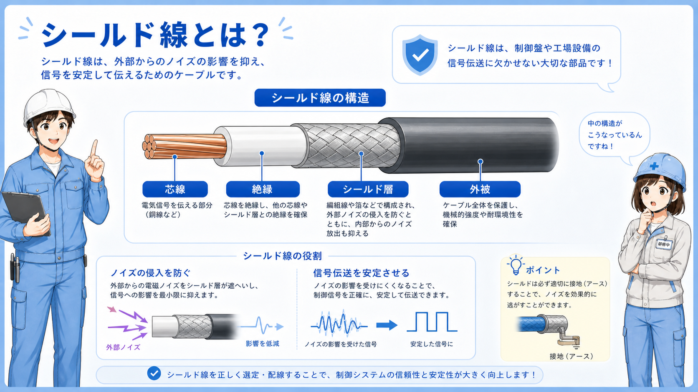
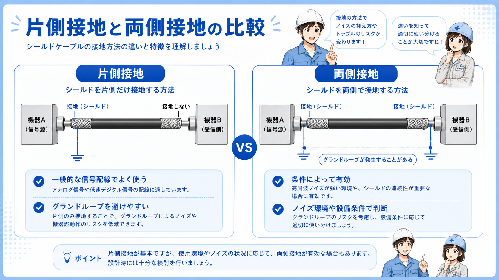
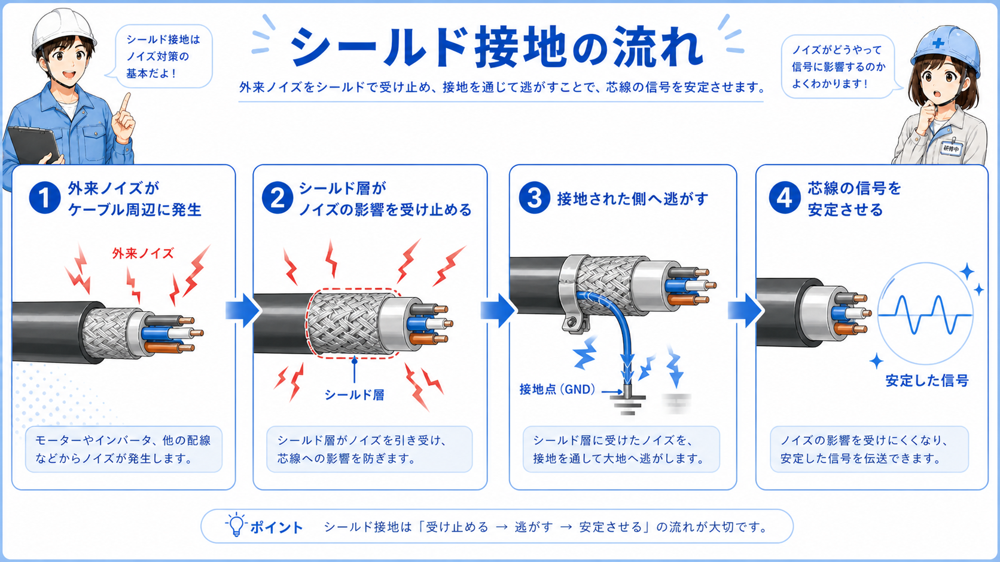

シールド線とは
シールド線とは、電線のまわりを金属編組やアルミテープなどで覆い、外からのノイズを受けにくくした電線です。 制御盤では、通信線、アナログ信号、エンコーダ線、ロードセル線などで使うことがあります。
シールドは、信号線のまわりにある「ノイズを受け止める外側の層」と考えると分かりやすいです。 そのシールドをどこで接地するかによって、ノイズの逃がし方が変わります。
ただし、シールド線を使えば必ずノイズが消えるわけではありません。 配線ルート、接地、動力線との距離、メーカー指示をセットで確認します。
まずはこう覚える
シールド線は、弱い信号をノイズから守るための電線です。シールド部分は、ノイズを受けて逃がすための外側の層として見ます。

先輩シールド線は、通信やアナログ信号みたいな弱い信号でよく出てくるよ。線そのものだけじゃなくて、シールドをどこへ落としているかも見るのが大事だね。

後輩シールド線は、ただ太い線というより、ノイズ対策用の構造が入っている電線なんですね。
シールド線の基本構成

シールド線の中には、信号を通す芯線があります。 その外側にシールド層があり、さらに外側を外被で覆っています。
シールド層は、外から入ってくるノイズを受け止めたり、信号線から出るノイズを外へ広げにくくしたりする役割があります。 ただし、シールド層をどこにも接続しないと、期待した効果が出にくいことがあります。
現場では、シールドのドレン線、シールドクランプ、FG端子、接地端子台などを確認します。 接続先は装置やメーカー指示によって異なるため、図面を見て判断します。
シールドは「接続先」まで見る
シールド線は、ケーブルの種類だけでなく、シールド部分をどこに接続しているかが重要です。FG、接地端子、シールドクランプなどを図面と合わせて確認します。
シールド線を使う代表的な場面
シールド線は、ノイズの影響を受けると困る信号で使われることが多いです。 代表的には、アナログ信号、通信線、エンコーダ線、ロードセル線などです。
これらの信号は、電圧や電流の変化が小さかったり、高速なパルスを扱ったりするため、ノイズで値がふらついたり通信エラーが出たりすることがあります。
| 用途 | シールド線が使われやすい理由 | 現場での見方 |
|---|---|---|
| アナログ信号 | 0-10V、4-20mAなどの信号がふらつきやすい | シールド接地、動力線との距離、配線ルートを見る |
| 通信線 | ノイズで通信エラーが出ることがある | シールド、終端、配線分離、接地処理を確認する |
| エンコーダ線 | 高速パルスを扱うためノイズ影響に注意する | モーター線との距離、シールド、専用ケーブルを確認する |
| ロードセル線 | 微小信号を扱うためノイズの影響を受けやすい | シールド、専用ケーブル、アンプ周りの配線を確認する |
弱い信号ほど注意する
シールド線は、ノイズに弱い信号を守るために使います。特にアナログ、通信、エンコーダ、ロードセルは、配線ルートと接地処理を合わせて確認します。
通常の電線とシールド線の違い

通常の電線は、主に電気を通す芯線と絶縁被覆で構成されます。 一般的な電源線や制御線ではこれで十分な場合が多いです。
シールド線は、芯線の外側にシールド層があります。 このシールド層がノイズを受け止め、接地側へ逃がすことで、芯線の信号を守りやすくします。
| 項目 | 通常の電線 | シールド線 |
|---|---|---|
| 構造 | 芯線と絶縁被覆が中心 | 芯線の外側にシールド層がある |
| 向いている用途 | 一般的な電源線、制御線 | 通信、アナログ、エンコーダ、ロードセル |
| ノイズ対策 | 配線分離や距離で対策することが多い | シールド層と接地処理で対策しやすい |
| 注意点 | 弱い信号ではノイズ影響に注意 | 接地方法を間違えると効果が出にくい |
シールドの接地方法は勝手に変えない
片側接地、両側接地、クランプ接続など、シールドの処理は装置やメーカーの考え方で決まります。分からないまま外したり、別の場所へつないだりしないようにします。
シールド接地の流れ

シールド接地を見るときは、まずケーブルのシールド層やドレン線を確認します。 次に、そのシールドがどこへ接続されているかを見ます。
接続先は、機器のFG端子、盤内の接地端子台、シールドクランプなどがあります。 通信機器やアナログ機器では、メーカー指定の接続方法があることも多いです。
1. シールド線を確認
対象ケーブルがシールド付きか、ドレン線があるかを確認します。
2. 接続先を見る
FG端子、接地端子台、シールドクランプなどを確認します。
3. 図面と照合
片側接地か両側接地か、図面やメーカー指示を確認します。
4. 配線ルートを見る
動力線との距離や、長い並走がないかを確認します。
先輩シールド線は、ケーブルだけ見て終わりじゃないよ。シールドをどこに落としているか、図面通りかを確認するのが大事だね。
後輩シールド線は、線の種類と接地先をセットで見るんですね。
現場で見るときのポイント
現場でシールド線を見るときは、まず対象の信号が何かを確認します。 アナログ信号、通信、エンコーダ、ロードセルなど、ノイズに弱い信号であれば、シールドや配線ルートが重要になります。
次に、シールドの処理を見ます。 片側だけ接地しているのか、両側で接地しているのか、シールドクランプを使っているのか、機器のFG端子へ落としているのかを確認します。
また、動力線やインバータ出力線との距離も大切です。 シールド線でも、ノイズ源の近くを長く並走していると影響を受けることがあります。
ここを覚える
シールド線は「使っているか」だけでなく、「どこで接地しているか」「動力線と離れているか」まで見ると、ノイズ対策として理解しやすくなります。
接地先
FG端子、接地端子台、シールドクランプなどの接続先を確認します。
接地方法
片側接地か両側接地か、図面やメーカー指示と照合します。
配線ルート
動力線やインバータ出力線との長い並走がないか確認します。
切断・未処理
シールドが途中で切られている、未接続で浮いている状態に注意します。
まとめ：シールド線は弱い信号をノイズから守るために使う
シールド線は、通信、アナログ、エンコーダ、ロードセルなど、ノイズの影響を受けやすい信号で使われることが多い電線です。 信号線の外側にシールド層を持ち、ノイズを受け止めて接地側へ逃がす役割があります。
ただし、シールド線を使うだけでは不十分です。 シールドの接地先、接地方法、配線ルート、動力線との距離を図面やメーカー指示に合わせて確認することが大切です。
この記事の結論
シールド線は、弱い信号をノイズから守るための電線です。ケーブルの種類だけでなく、シールドの接地先と配線ルートまでセットで確認しましょう。